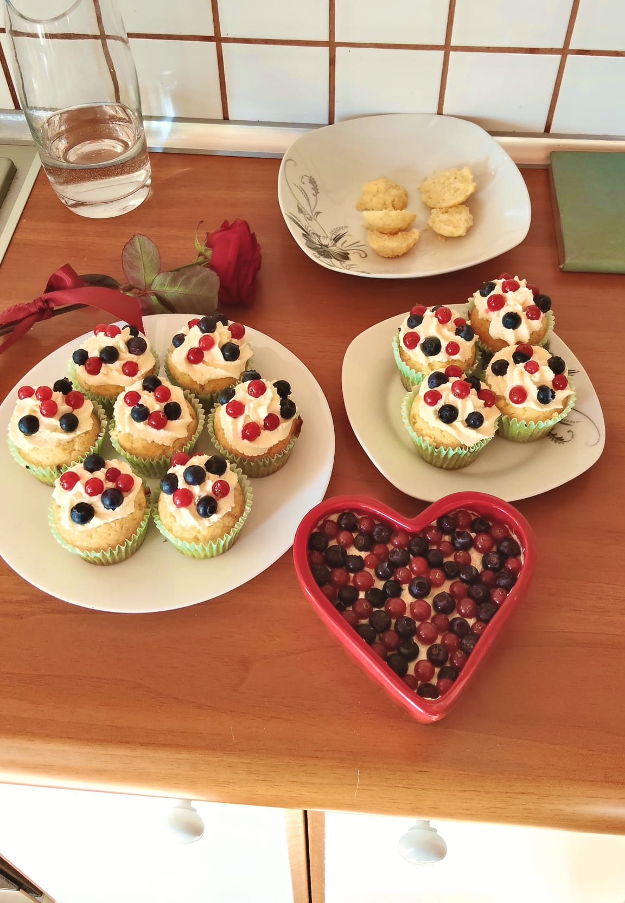

Cozy Bites
Acasă
Adaugă Rețetă
Carduri Rețete
Brioșe cu lămâie și vanilie

Câte brioșe vrei să faci?
-
+
Cantități pentru
24
brioșe:
Ingrediente Aluat
400
g făină
160
ml lapte
5
ouă
160
ml ulei
330
g zahăr
esență de vanilie
1 plic praf de copt
coaja de la o lămâie
Ingrediente Cremă
200
ml frișcă lichidă
2
cutii mascarpone
zahăr pudră după gust
esență de vanilie
fructe de pădure pentru decor
Mod de preparare
Amestecăm toate ingredientele pentru aluatul de brioșe.
Turnăm compoziția în formele de brioșe, presărăm puțin zahăr deasupra.
Punem la cuptorul preîncălzit la
210 grade Celsius
pentru 8 minute, apoi le mai lăsăm 10 minute la
170 grade C
.
Între timp mixăm frișca lichidă până se întărește, adăugăm mascarponele, vanilia și zahărul și continuăm să mixăm până obținem o cremă puțin fermă.
Punem crema de mascarpone într-un poș și ornăm brioșele.
Decorăm brioșele cu fructe de pădure.